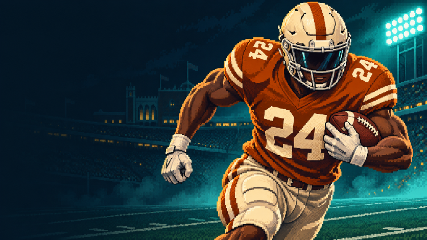

Aprenda o playbook em partidas rápidas
Escolha os dois times, a dificuldade, o clima e a duração dos quartos. Observe as rotas e a cobertura antes de chamar o snap.

Futebol americano universitário
Do primeiro snap à final universitária.
Escolha seu time, chame as jogadas e execute passes, corridas e chutes. Você pode disputar uma partida rápida, jogar um campeonato ou cuidar do elenco e do recrutamento ao longo de várias temporadas.
Você tem quatro descidas para ganhar dez jardas. Leia a defesa antes do snap e escolha entre avançar aos poucos ou arriscar um passe longo. A chuva dificulta a recepção, a neve encurta os passes e o vento pode desviar o chute.
Escolha os dois times, a dificuldade, o clima e a duração dos quartos. Observe as rotas e a cobertura antes de chamar o snap.
Recrute atletas com o fundo de bolsas, administre lesões e notas e invista nas instalações. A temporada regular tem 12 jogos, com chance de disputar a final da conferência, um bowl ou o playoff nacional.
Jogue ou simule as rodadas do campeonato nacional ou de uma conferência. Nos desafios, cinco academias militares têm quatro cenários de virada cada, com troféus por vitória.
Escolha duas equipes e deixe a IA disputar os quatro quartos. Acompanhe a transmissão em velocidade normal, 2× ou 4×.
Edite nome, mascote, cores, capacete e força do programa. Com uma carreira ativa, você também pode ajustar nomes, números e posições do elenco.
Abra o jogo no navegador e escolha dois times. Se jogar no celular, vire a tela na horizontal para enxergar melhor o campo.
Use Jogar no navegador. Para mudar o idioma, acesse Settings › Language › Português (Brasil).
Entre em Jogo Rápido e selecione os times. Para aprender os comandos, escolha Rookie, tempo limpo e quartos de um minuto.
Confirme a jogada e pressione Espaço para iniciar o lance. No celular, toque no campo.
Clique em Jogar no navegador, abra Quick Play (Jogo Rápido) e escolha seu time e o adversário. O jogo abre no navegador sem instalação.
Use as setas para navegar pelo playbook, Enter para confirmar e Espaço para iniciar o snap. Use a letra indicada sobre o recebedor ou clique e arraste no campo para mirar o passe.
Durante a corrida, use W e S ou as setas para desviar e Shift para acelerar. Nos chutes, pressione Espaço quando o marcador chegar à faixa verde.
Use o mesmo navegador e perfil para manter a carreira e o campeonato. Para guardar uma cópia da carreira ou levá-la para outro navegador, vá a Opções › Exportar save.
Baixe o ZIP do repositório e extraia todos os arquivos. Abra index.html no navegador e mantenha a pasta assets ao lado dele.